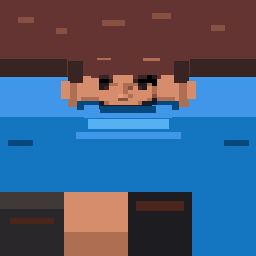

Villageois capsule · modèle 3D
Une pilule simple, les mains rapprochées et des chaussures détaillées de taille proche des mains. La texture du villageois couvre le corps, les mains et les pieds ; l’animation Walk reste intégrée au modèle.
Glisser pour tourner · Molette pour zoomer
Choisir le modèle
Voir le personnage
Image UV du modèle

La bande supérieure enveloppe le corps. Les carrés inférieurs colorent chaussures et mains.

Mains et chaussures issues du modèle de Zakaria991, Team Buddies (CC BY 4.0), adaptées pour ce prototype.
Chargement du modèle…